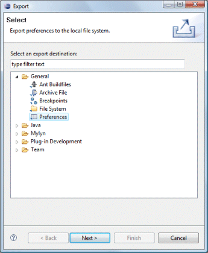
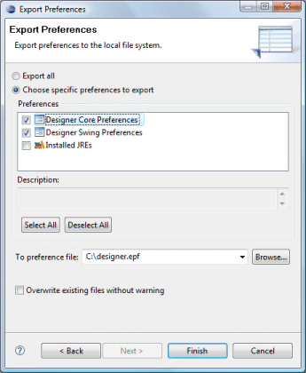
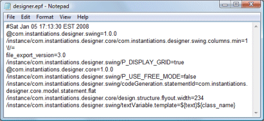
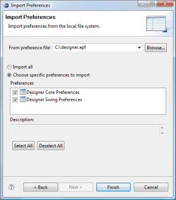

| Preferences may be exported using the Eclipse File > Export > General > Preferences command. Choose the
WindowBuilder Preferences category, enter an export file name, and click Finish.   Preferences are exported in Eclipse preference format. Preferences may be imported using the Eclipse File > Import > General > Preferences command.  |